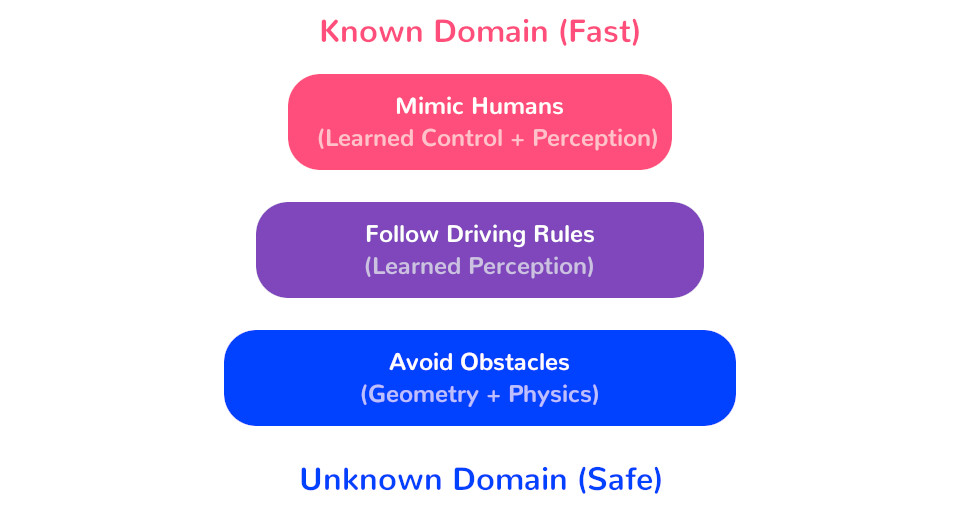

1. AVs must be superhuman just to break even.
I'm picturing the matchup like this:
AVs will be inferior at:
- Interpreting Edge Cases: Andrej Karpathy has a nice compilation of these that should frighten any AV engineer. Sacha Arnoud and Drago Anguelov (Waymo) have have more.
- Acting to Reduce Uncertainty: Hand-designed recovery rules with machine-learned triggers should be enough to handle most common cases, but not all of them.
- Self-Improvement: humans can learn from their failures without needing to upload them to the cloud, wait for an engineer to build a fix, and pull the fix back down over Wi-Fi...
AVs could be superior at:
- Mapping: AVs can have centimeter-accurate localization in richly-detailed maps.
- Surround Perception: AVs can be watching every direction at once, with multiple sensors, at all times, without getting distracted.
- Low Latency: AVs can (in theory) have reaction times in the ones or tens of milliseconds, instead of the thousands.
2. AVs need to track uncertainty and reduce it over time.
...because uncertainty is necessary for fault-tolerant intelligence.
Any line of code that looks like if (p_x > threshold) (binarizing a confidence estimate) or x = argmax(x_likelihoods) (binarizing a distribution) is going to cause a comical failure eventually.
If you forgo uncertainty at one layer in your perception stack, you're doomed to approximate the uncertainty with temporal smoothing at the next level up; the end result of this approach is a card tower of progressively-worse approximations.
(Corollary: systems that devote all of their energy to good per-frame results will fare poorly. The real world is not a benchmark, frames are not i.i.d, and it's usually better to run a dumber system at higher framerates with good cross-frame tracking.)
3. AVs that work anywhere must first work everywhere (cautiously)

I am very pessimistic about systems that start by assuming an idealized environment and attempt to special-case for harder ones. Starting with minimal assumptions about the environment is another form of built-in fault tolerance.
Successful systems will start with a foundation of content-agnostic environment reconstruction (through LIDAR, stereo, SFM/MVS, whatever) + obstacle avoidance, and special-case upwards. If there are line lines, use them as a strong prior for where to drive. If some obstacles are recognizable as cars and pedestrians, use stronger assumptions about how those obstacles will move. If you can recognize an obstacle as a plastic bag or a cloud of exhaust, you can safely run into it. But only then.